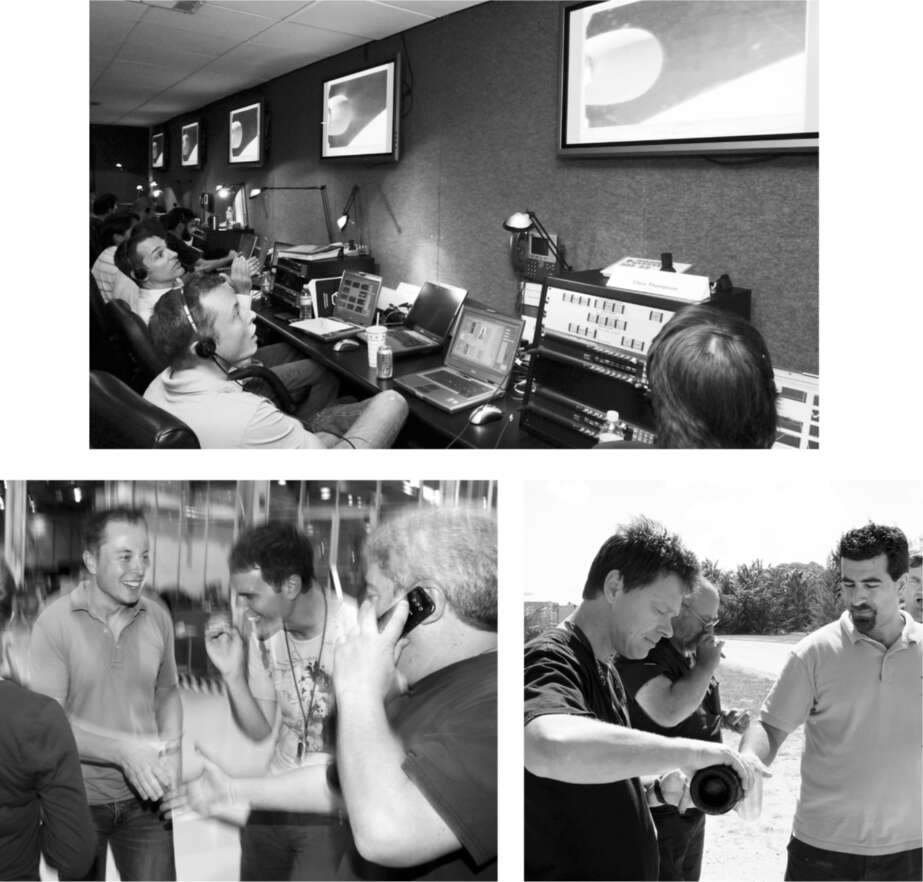

Những người sáng lập đến giải cứu
Musk đã dự trù ngân sách cho ba lần phóng thử nghiệm tên lửa Falcon 1, và cả ba đều phát nổ trước khi vào được quỹ đạo. Đối mặt với nguy cơ phá sản cá nhân và Tesla đang trong khủng hoảng tài chính, thật khó để thấy ông sẽ huy động tiền như thế nào cho lần thử thứ tư. Sau đó, một nhóm bất ngờ đã đến giải cứu: những người đồng sáng lập PayPal của ông, những người đã tước bỏ vai trò CEO của ông tám năm trước đó.
Musk đã chấp nhận việc bị phế truất một cách bình tĩnh khác thường, và ông vẫn giữ mối quan hệ thân thiện với những người lãnh đạo cuộc đảo chính, bao gồm Peter Thiel và Max Levchin. Nhóm mafia PayPal cũ, như cách họ tự gọi mình, là một tập thể gắn bó chặt chẽ. Họ đã giúp đỡ tài chính cho cựu đồng nghiệp David Sacks - người bạn đã ghi chép cho Antonio Gracias ở trường luật - khi anh sản xuất bộ phim châm biếm Thank You for Smoking. Thiel đã hợp tác với hai cựu nhân viên PayPal khác, Ken Howery và Luke Nosek, để thành lập Founders Fund, một quỹ đầu tư chủ yếu vào các công ty khởi nghiệp internet.
Thiel nói rằng ông "hoàn toàn hoài nghi về công nghệ sạch", vì vậy quỹ này đã không đầu tư vào Tesla. Nosek, người đã trở nên thân thiết với Musk, đề nghị họ nên đầu tư vào SpaceX. Thiel đồng ý gọi điện thoại hội nghị với Musk để thảo luận về ý tưởng này. "Có lúc tôi hỏi Elon liệu chúng tôi có thể nói chuyện với kỹ sư trưởng tên lửa của công ty không", Thiel nói, "và Elon trả lời, 'Bạn đang nói chuyện với anh ta ngay bây giờ đấy'." Điều đó không làm Thiel yên tâm, nhưng Nosek đã rất nỗ lực để thực hiện khoản đầu tư. "Tôi lập luận rằng những gì Elon đang cố gắng làm thật đáng kinh ngạc, và chúng ta nên là một phần của nó", ông nói.
Cuối cùng Thiel đã nhượng bộ và đồng ý rằng quỹ có thể đầu tư 20 triệu đô la. "Một phần suy nghĩ của tôi là đó sẽ là một cách để hàn gắn mọi thứ từ câu chuyện PayPal", ông nói. Khoản đầu tư được công bố vào ngày 3 tháng 8 năm 2008, ngay sau khi lần phóng thử thứ ba thất bại. Nó đóng vai trò như một phao cứu sinh cho phép Musk tuyên bố rằng ông sẽ tài trợ cho lần phóng thứ tư.
"Đó là một bài học thú vị về nghiệp báo", Musk nói. "Sau khi tôi bị ám sát bởi những kẻ cầm đầu cuộc đảo chính PayPal, giống như Caesar bị đâm ở Thượng viện, tôi đã có thể nói 'Các người thật tệ'. Nhưng tôi đã không làm vậy. Nếu tôi đã làm như vậy, Founders Fund sẽ không xuất hiện vào năm 2008 và SpaceX đã chết. Tôi không tin vào chiêm tinh học hay những thứ tương tự. Nhưng nghiệp báo có thể là có thật."
Sau thất bại thứ ba vào tháng 8/2008, Musk đã gây chấn động cho đội ngũ của mình bằng thời hạn sáu tuần để đưa tên lửa mới tới Kwaj. Điều này nghe có vẻ như một chiêu trò bóp méo thực tế điển hình của Musk. Họ đã mất mười hai tháng giữa lần phóng thất bại thứ nhất và thứ hai, và mười bảy tháng nữa giữa lần thứ hai và thứ ba. Nhưng vì tên lửa không cần thay đổi thiết kế cơ bản nào để khắc phục sự cố dẫn đến thất bại thứ ba, ông tính toán rằng thời hạn sáu tuần là khả thi và sẽ tiếp thêm năng lượng cho đội ngũ. Hơn nữa, với tốc độ đốt tiền nhanh chóng, ông không còn lựa chọn nào khác.
SpaceX có sẵn các bộ phận cho tên lửa thứ tư tại nhà máy ở Los Angeles, nhưng vận chuyển bằng đường biển đến Kwaj sẽ mất bốn tuần. Tim Buzza, giám đốc phóng của SpaceX, nói với Musk rằng cách duy nhất để đáp ứng thời hạn là thuê một máy bay vận tải C-17 của Không quân. "Vậy thì cứ làm đi", Musk đáp. Đó là lúc Buzza biết rằng Musk sẵn sàng đặt cược tất cả.
Hai mươi nhân viên SpaceX cùng đi với tên lửa trong khoang chở hàng của C-17, ngồi trên những chiếc ghế gấp dọc theo thành. Không khí rất náo nhiệt. Các thành viên trong đội, những người làm việc miệt mài, nghĩ rằng họ sắp sửa tạo nên một kỳ tích phi thường.
Khi bay qua Thái Bình Dương, một kỹ sư trẻ tên Trip Harriss lấy ra một cây đàn guitar và bắt đầu chơi. Cha mẹ anh là giáo sư âm nhạc ở Tennessee, và anh được đào tạo để trở thành một nhạc sĩ cổ điển. Nhưng một dịp Giáng sinh, anh xem Star Trek và quyết định muốn trở thành một nhà khoa học tên lửa. "Cuối cùng tôi đã tìm ra cách để thay đổi bộ não của mình từ âm nhạc sang kỹ thuật", điều đó không phải là một sự chuyển đổi lớn như anh nghĩ. Sau một năm ở Purdue, anh chật vật tìm kiếm một kỳ thực tập hè, nhưng liên tục trượt phỏng vấn. Anh đã chấp nhận làm việc tại một cửa hàng Ace Hardware địa phương khi giáo sư của anh nhận được cuộc gọi từ một người bạn tại SpaceX nói rằng họ cần thực tập sinh. Không cần chờ đợi bất kỳ thủ tục giấy tờ nào, sáng hôm sau Harriss lên xe, bỏ lại bạn gái, và lái xe từ Indiana đến Los Angeles.
Khi máy bay bắt đầu hạ độ cao để tiếp nhiên liệu ở Hawaii, có một tiếng nổ lớn. Rồi lại một tiếng nữa. "Chúng tôi nhìn nhau, kiểu như, điều này có vẻ kỳ lạ", Harriss nói. "Và sau đó chúng tôi nghe thấy một tiếng nổ khác, và chúng tôi thấy thành bên của thùng nhiên liệu tên lửa bị móp lại như một lon Coca". Việc máy bay hạ độ cao nhanh chóng khiến áp suất trong khoang hàng tăng lên, và các van của thùng nhiên liệu không kịp đưa không khí vào để cân bằng áp suất bên trong.
Các kỹ sư cuống cuồng lấy dao bỏ túi ra cắt lớp màng co và cố gắng mở các van. Bülent Altan chạy đến buồng lái để cố gắng ngăn máy bay hạ độ cao. "Một anh chàng người Thổ Nhĩ Kỳ to lớn đang hét vào mặt các phi công Không quân, những người Mỹ da trắng nhất mà bạn từng thấy, để bay lên cao hơn", Harriss nói. Thật ngạc nhiên, họ đã không thả tên lửa, hay Altan, xuống biển. Thay vào đó, họ đồng ý bay lên, nhưng cảnh báo Altan rằng họ chỉ còn ba mươi phút nhiên liệu. Điều đó có nghĩa là trong mười phút nữa họ sẽ phải bắt đầu hạ độ cao trở lại. Một trong những kỹ sư đã leo vào khu vực tối giữa tầng thứ nhất và tầng thứ hai của tên lửa, tìm thấy đường ống điều áp lớn, và xoay nó mở, cho phép không khí tràn vào tên lửa và cân bằng áp suất khi máy bay vận tải lại bắt đầu hạ độ cao. Kim loại bắt đầu bật trở lại gần hình dạng ban đầu. Nhưng thiệt hại đã xảy ra. Bề ngoài bị móp, và một trong những vách ngăn chống rung lắc đã bị lệch.
Họ gọi cho Musk ở Los Angeles để báo cáo sự việc và đề xuất đưa tên lửa trở về. "Tất cả chúng tôi đứng đó chỉ nghe thấy một khoảng lặng", Harriss kể. "Ông ấy im lặng một lúc. Rồi nói, 'Không, các anh sẽ đưa nó đến Kwaj và sửa chữa tại đó'." Harriss nhớ lại rằng khi đến Kwaj, phản ứng đầu tiên của họ là: "Thôi xong, tiêu rồi". Nhưng sau một ngày, sự hào hứng trỗi dậy. "Chúng tôi bắt đầu tự nhủ, 'Mình sẽ làm cho nó hoạt động'."
Buzza và Chris Thompson, giám đốc kết cấu tên lửa, đã gom góp các thiết bị cần thiết tại trụ sở SpaceX, bao gồm cả vách ngăn mới để ngăn nhiên liệu tràn trong thùng, và chất chúng lên máy bay riêng của Musk để bay từ Los Angeles đến Kwaj. Tại đó, họ thấy một nhóm kỹ sư đang hối hả làm việc giữa đêm khuya với tên lửa đã được tháo dỡ, như những bác sĩ trong phòng cấp cứu đang cố gắng cứu sống bệnh nhân.
Sau ba lần thất bại đầu tiên của SpaceX, Musk đã áp dụng thêm các biện pháp kiểm soát chất lượng và giảm rủi ro. "Vì vậy, lúc đó chúng tôi đã quen với việc làm chậm hơn một chút, với nhiều tài liệu và kiểm tra hơn", Buzza nói. Anh ấy nói với Musk rằng nếu tuân thủ tất cả các yêu cầu mới này, sẽ mất năm tuần để sửa chữa tên lửa. Nếu bỏ qua các yêu cầu đó, họ có thể làm điều đó trong năm ngày. Musk đã đưa ra quyết định như mong đợi. "Được rồi", ông nói. "Hãy làm nhanh nhất có thể."
Quyết định đảo ngược chỉ thị về kiểm soát chất lượng của Musk đã dạy cho Buzza hai điều: Musk có thể thay đổi khi tình huống thay đổi và ông ấy sẵn sàng chấp nhận rủi ro hơn bất kỳ ai. "Đây là điều chúng tôi phải học, đó là Elon sẽ đưa ra một tuyên bố, nhưng sau đó thời gian trôi qua và ông ấy sẽ nhận ra, 'Ồ không, thực ra chúng ta có thể làm theo cách khác'," Buzza nói.
Khi họ đang hối hả làm việc dưới cái nắng gay gắt của Kwaj, họ bị theo dõi bởi một con cua dừa khổng lồ dài gần một mét. Họ đặt tên cho nó là Elon, và dưới sự chứng kiến của nó, họ đã hoàn thành việc sửa chữa trong vòng năm ngày quy định. "Điều này khác xa với bất cứ điều gì mà các công ty cồng kềnh trong ngành hàng không vũ trụ có thể tưởng tượng được", Buzza nói. "Đôi khi những thời hạn điên rồ của ông ấy lại hợp lý."
Nếu lần phóng thứ tư này không thành công, đó sẽ là dấu chấm hết cho SpaceX và có lẽ là cả ý tưởng táo bạo về việc tiên phong không gian có thể được dẫn dắt bởi các doanh nhân tư nhân. Nó cũng có thể là kết thúc của Tesla. "Chúng tôi sẽ không thể nhận được bất kỳ khoản tài trợ mới nào cho Tesla", Musk nói. "Mọi người sẽ nghĩ, 'Nhìn anh chàng có công ty tên lửa thất bại kìa, hắn ta là kẻ thua cuộc'."
Vụ phóng được lên kế hoạch vào ngày 28 tháng 9 năm 2008, và Musk dự định theo dõi từ xe chỉ huy tại trụ sở SpaceX ở Los Angeles. Để giảm bớt căng thẳng, Kimbal đề nghị họ đưa con cái đến Disneyland vào buổi sáng hôm đó. Đó là một ngày Chủ nhật đông đúc, và họ đã không sắp xếp để được vào cửa VIP, nhưng việc xếp hàng dài lại là một điều may mắn vì nó có tác dụng làm dịu Elon. Thật hợp lý, họ đã chơi tàu lượn siêu tốc Space Mountain, một phép ẩn dụ quá rõ ràng đến mức nó sẽ có vẻ sáo rỗng nếu không phải là sự thật.
Mặc chiếc áo polo màu be và quần jean bạc màu mà anh ấy đã mặc ở Disneyland, Musk đến xe chỉ huy ngay khi cửa sổ phóng mở ra lúc 4 giờ chiều. Trên một trong các màn hình, anh ấy có thể thấy Falcon 1 trên bệ phóng Kwaj. Trong phòng điều khiển im lặng khi giọng nói của một người phụ nữ vang lên đếm ngược.
Khi tên lửa rời bệ phóng, tiếng hò reo vang lên, nhưng Musk lặng lẽ nhìn chằm chằm vào dữ liệu hiển thị trên máy tính và màn hình treo tường chiếu video từ camera của tên lửa. Sau sáu mươi giây, video cho thấy luồng khí từ động cơ sẫm màu hơn. Điều này là bình thường; bởi vì tên lửa đã đạt đến tầng không khí loãng hơn với ít oxy hơn. Quần đảo Kwajalein Atoll khuất dần, trông như một chuỗi ngọc trai trên biển ngọc lam.
Sau hai phút, đã đến lúc các tầng tách ra. Động cơ đẩy tắt, và lần này có một độ trễ năm giây trước khi tầng thứ hai được kích hoạt, để ngăn chặn sự va chạm đã làm hỏng lần phóng thứ ba. Khi tầng thứ hai từ từ tách ra, Musk cuối cùng cũng cho phép mình thốt lên một tiếng reo vui.
Động cơ Kestrel trên tầng thứ hai hoạt động hoàn hảo. Vòi phun của nó phát sáng màu đỏ xỉn do sức nóng, nhưng Musk biết vật liệu có thể nóng trắng và vẫn tồn tại. Cuối cùng, chín phút sau khi phóng, động cơ Kestrel tắt theo kế hoạch và tải trọng của nó được đưa vào quỹ đạo. Lúc này, tiếng reo hò đã chói tai, và Musk giơ tay lên không trung. Kimbal, đứng cạnh anh, bắt đầu khóc.
Falcon 1 đã làm nên lịch sử với tư cách là tên lửa tư nhân đầu tiên được phóng từ mặt đất và đạt đến quỹ đạo. Musk và đội ngũ nhỏ chỉ năm trăm nhân viên (bộ phận tương đương của Boeing có năm mươi nghìn) đã thiết kế hệ thống từ đầu và tự thực hiện tất cả việc xây dựng. Rất ít công việc được thuê ngoài. Và nguồn vốn cũng là tư nhân, phần lớn từ túi của Musk. SpaceX có hợp đồng thực hiện các nhiệm vụ cho NASA và các khách hàng khác, nhưng họ sẽ chỉ được trả tiền nếu và khi họ thành công. Không có trợ cấp hoặc hợp đồng cộng thêm chi phí.
"Thật tuyệt vời," Musk hét lên khi bước vào nhà máy. Anh ấy nhảy một điệu nhảy nhỏ trước những nhân viên đang hò reo tụ tập gần căng tin. "Lần thứ tư mới là lần may mắn!" Khi tiếng hò reo lại nổi lên, anh bắt đầu nói lắp bắp nhiều hơn bình thường. "Tâm trí tôi hơi choáng ngợp, nên tôi khó nói điều gì," anh lẩm bẩm. Nhưng sau đó, anh ấy đã tuyên bố tầm nhìn của mình cho tương lai: "Đây chỉ là bước đầu tiên trong nhiều bước. Chúng ta sẽ đưa Falcon 9 lên quỹ đạo vào năm tới, vận hành tàu vũ trụ Dragon và tiếp quản từ Tàu con thoi. Chúng ta sẽ làm rất nhiều việc, thậm chí là lên sao Hỏa."
Mặc dù vẻ ngoài cứng rắn, nhưng dạ dày của Musk đã bị co thắt trong quá trình phóng, gần như đến mức nôn mửa. Ngay cả sau thành công, anh vẫn khó cảm thấy vui mừng. "Nồng độ cortisol, hormone căng thẳng, adrenaline của tôi, chúng quá cao đến nỗi tôi khó có thể cảm thấy hạnh phúc," anh nói. "Có một cảm giác nhẹ nhõm, giống như được thoát khỏi cái chết, nhưng không có niềm vui. Tôi đã quá căng thẳng."
Vụ phóng thành công đã cứu vãn tương lai của các nỗ lực không gian kinh doanh. "Giống như Roger Bannister đã vượt qua kỷ lục chạy một dặm trong bốn phút, SpaceX đã khiến mọi người đánh giá lại giới hạn của mình khi nói đến việc chinh phục không gian," tác giả Ashlee Vance viết.
Điều đó đã dẫn đến một sự thay đổi lớn trong định hướng của NASA. Việc chương trình Tàu con thoi sắp kết thúc đồng nghĩa với việc Mỹ sẽ không còn khả năng đưa phi hành đoàn hoặc hàng hóa lên Trạm Vũ trụ Quốc tế. Vì vậy, cơ quan này đã công bố một cuộc thi giành hợp đồng thực hiện các nhiệm vụ vận chuyển hàng hóa đến đó. Thành công của chuyến bay Falcon 1 thứ tư đã cho phép Musk và Gwynne Shotwell bay đến Houston vào cuối năm 2008 để gặp gỡ NASA và thúc đẩy trường hợp của họ.
Khi bước xuống máy bay riêng, Musk kéo cô sang một bên để trò chuyện ngay trên đường băng. “NASA đang lo ngại tôi phải chia thời gian giữa SpaceX và Tesla,” anh nói với cô. “Tôi cần một người đồng hành.” Đó không phải là một ý nghĩ đến với anh một cách dễ dàng; anh giỏi chỉ huy hơn là hợp tác. Rồi anh đưa ra lời đề nghị. “Cô có muốn làm chủ tịch của SpaceX không?” Anh sẽ vẫn là CEO, và họ sẽ phân chia trách nhiệm. “Tôi sẽ tập trung vào kỹ thuật và phát triển sản phẩm,” anh nói, “và tôi muốn cô tập trung vào quản lý khách hàng, nhân sự, quan hệ chính phủ và phần lớn về tài chính.” Cô ngay lập tức đồng ý. “Tôi thích làm việc với con người, còn anh ấy thích làm việc với phần cứng và thiết kế,” cô giải thích.
Vào ngày 22 tháng 12, như thể khép lại một năm 2008 tồi tệ, Musk nhận được một cuộc gọi trên điện thoại di động. Giám đốc chương trình bay không gian của NASA, Bill Gerstenmaier, người sau này sẽ làm việc tại SpaceX, đã báo tin cho anh: SpaceX sẽ được trao hợp đồng trị giá 1,6 tỷ đô la để thực hiện mười hai chuyến bay khứ hồi lên Trạm Vũ trụ Quốc tế. “Tôi yêu NASA,” Musk đáp. “Các bạn thật tuyệt vời.” Sau đó, anh đã đổi mật khẩu đăng nhập máy tính của mình thành “ilovenasa.”

Musk trong phòng điều khiển và với các kỹ sư; Koenigsmann rót sâm pal